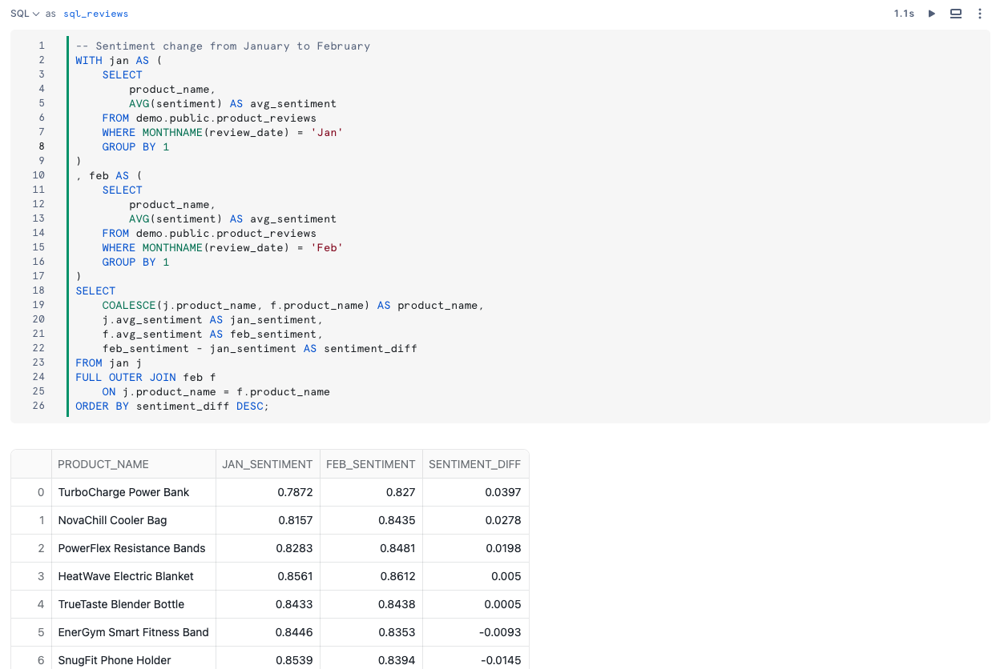

This guide is designed to help you learn how to bring artificial intelligence (AI) to open data lakehouses with Snowflake Cortex AI and Iceberg Tables.
Prerequisites
- Familiarity with Snowflake
- Familiarity with cloud object storage
- Familiarity with SQL
- Familiarity with Python
- Familiarity with Apache Iceberg
What You'll Learn
- How to use a Snowflake Notebooks
- How to create a Snowflake-managed Iceberg Table
- How to load data to Iceberg Tables with Snowpark
- How to use LLM functions to generate sentiment predictions
- How to automate CDC pipelines with Streams and Tasks
What You'll Need
- A Snowflake account with access to
ACCOUNTADMINrole. A free trial will suffice. Standard Edition will work for this lab. The account must be in one of these regions:- AWS US West 2 (Oregon)
- AWS US East 1 (N. Virginia)
- AWS Europe Central 1 (Frankfurt)
- Azure East US 2 (Virginia)
- Azure West Europe (Netherlands)
- A storage bucket with the same cloud provider in the same region that hosts your Snowflake account above. Direct credential access required as storage integrations are not supported for External Volumes.
What You'll Build
- A open data lakehouse with Iceberg
- An automated CDC pipeline to process data using an LLM
Create Database and Warehouse
Create a separate database and warehouse for this demo.
CREATE OR REPLACE DATABASE demo;
CREATE OR REPLACE WAREHOUSE demo_wh;
USE DATABASE demo;
USE WAREHOUSE demo_wh;
Create a Snowflake Notebook
Create a Snowflake Notebook for this demo following these steps:
- Download the ipynb file here.
- From Snowsight, click Projects > Notebooks > in the top-right dropdown Import .ipynb file. Select the downloaded snowflake.ipynb file.
- Choose the DEMO database, PUBLIC schema, and DEMO_WH warehouse, and click Create.
The Snowflake Notebook you've created has the code needed for this demo, which are also available in the remainder of this quickstart guide.

Create an External Volume
Before you create an Iceberg table, you must have an external volume. An external volume is a Snowflake object that stores information about your cloud storage locations and identity and access management (IAM) entities (for example, IAM roles). Snowflake uses an external volume to establish a connection with your cloud storage in order to access Iceberg metadata and Parquet data.
To create an external volume, complete the instructions for your cloud storage service:
Remember from the Overview section, your Snowflake account must be in the same region as your external volume location. And to use the Sentiment LLM function, supported regions currently include:
- AWS US West 2 (Oregon)
- AWS US East 1 (N. Virginia)
- AWS Europe Central 1 (Frankfurt)
- Azure East US 2 (Virginia)
- Azure West Europe (Netherlands)
Prior to creating the external volume, be sure to use the ACCOUNTADMIN role.
-- Use accountadmin role to create an external volume
USE ROLE accountadmin;
-- Create an external volume
CREATE OR REPLACE EXTERNAL VOLUME iceberg_cortex_vol
STORAGE_LOCATIONS =
(
(
NAME = '<your volume name>'
STORAGE_PROVIDER = '<your storage provider>'
STORAGE_BASE_URL = '<your storage base URL>'
STORAGE_AWS_ROLE_ARN = '<your role arn>'
STORAGE_AWS_EXTERNAL_ID = '<your external ID>'
AZURE_TENANT_ID = '<your tenant ID>'
)
);
Name the external volume you create iceberg_cortex_vol.
Create an Iceberg Table
Iceberg Tables can currently use Snowflake, AWS Glue, or object storage as the catalog. In public preview soon, Snowflake can use catalog integration with an Iceberg REST endpoint. In this quickstart, use Snowflake as the catalog to allow read and write operations to the table. More information about integrating catalogs can be found here.
Create an Iceberg Table referencing the external volume you just created. You can specify BASE_LOCATION to instruct Snowflake where to write table data and metadata, or leave empty to write data and metadata to the location specified in the external volume definition.
CREATE OR REPLACE ICEBERG TABLE demo.public.product_reviews (
id STRING,
product_name STRING,
product_id STRING,
reviewer_name STRING,
review_date DATE,
review STRING,
sentiment FLOAT
)
CATALOG = 'SNOWFLAKE'
EXTERNAL_VOLUME = 'iceberg_cortex_vol'
BASE_LOCATION = 'demo/product_reviews/'
;
There are multiple ways to load new data into Snowflake-managed Iceberg Tables including INSERT, COPY INTO, and Snowpipe.
For this quickstart, we will INSERT data from the sample tables in your Snowflake account to an Iceberg Table. Snowflake will write Parquet files and Iceberg metadata to your external volume.
First, create an external stage and file format.
-- Create a file format
CREATE OR REPLACE FILE FORMAT demo.public.csv_ff
TYPE = 'CSV'
FIELD_OPTIONALLY_ENCLOSED_BY = '"'
SKIP_HEADER = 1;
-- Create an external stage to read CSV files from an S3 bucket in-place
CREATE OR REPLACE STAGE demo.public.files
URL = 's3://sfquickstarts/iceberg_cortex/'
FILE_FORMAT = demo.public.csv_ff
DIRECTORY = (ENABLE = TRUE);
Create a Snowpark DataFrame
To read the CSV files from Amazon S3 into a dataframe, first create a Snowpark session.
import json|
from snowflake.snowpark import Session
import snowflake.snowpark.types as T
session = get_active_session()
Create a schema Snowpark dataframe matching the CSV files
reviews_schema = T.StructType([T.StructField("ID", T.StringType()),
T.StructField("PRODUCT_NAME", T.StringType()),
T.StructField("PRODUCT_ID", T.StringType()),
T.StructField("REVIEWER_NAME", T.StringType()),
T.StructField("REVIEW_DATE", T.DateType()),
T.StructField("REVIEW", T.StringType()),
T.StructField("SENTIMENT", T.FloatType())])
Read the CSV files into a dataframe named jan_df using the defined schema, and view the dataframe.
jan_df = session.read \
.schema(reviews_schema) \
.option("skip_header", 1) \
.option("field_optionally_enclosed_by", '"') \
.csv("@demo.public.files/product_reviews_jan_24.csv")
jan_df.show()
Write the dataframe to the Iceberg Table.
jan_df.write.mode("append").save_as_table("demo.public.product_reviews")
You now see metadata files and Parquet data files in your object storage, whether you're using Amazon S3 or Azure storage.

Now you can query the Iceberg Table using LLM functions from Snowflake Cortex. Run the query below to calculate sentiment scores for product reviews.
SELECT
id,
product_name,
review_date,
snowflake.cortex.sentiment(review) as review_sentiment
FROM demo.public.product_reviews

Write the sentiment scores back to the Iceberg Table. With Snowflake Notebooks, you can reference the results of previous cells in your notebook.
UPDATE demo.public.product_reviews AS pr
SET sentiment = jan.review_sentiment
FROM {{sql_reviews_jan}} AS jan
WHERE jan.id = pr.id;
Suppose new product reviews continue to be generated, stored as new CSV files, and you'd like to use Snowflake to automatically compute sentiment scores on new product reviews.
Streams on Directory Tables can detect new files in stages, perform computation, and store results. LLM functions from Snowflake Cortex can be called in these pipelines, writing results to Iceberg Tables.
To simulate this, create a Stream on the Iceberg Table to detect new product reviews loaded to the table. On a schedule, a Serverless Task will call the SENTIMENT function on to incrementally process new records.
-- Create a Stream to detect new product review records in the Iceberg Table
CREATE OR REPLACE STREAM demo.public.product_reviews_stream ON TABLE demo.public.product_reviews;
-- Create a Serverless Task to add sentiment for new records from the Stream
CREATE OR REPLACE TASK demo.public.cortex_sentiment_score
SCHEDULE = 'USING CRON 0 0 * * * America/Los_Angeles'
USER_TASK_MANAGED_INITIAL_WAREHOUSE_SIZE = 'XSMALL'
AS
UPDATE demo.public.product_reviews AS pr
SET sentiment = snowflake.cortex.sentiment(prs.review)
FROM demo.public.product_reviews_stream AS prs
WHERE prs.id = pr.id;
Now see the incremental processing pipeline in action. Create a dataframe for February product reviews and write it to the Iceberg Table.
feb_df = session.read \
.schema(reviews_schema) \
.option("skip_header", 1) \
.option("field_optionally_enclosed_by", '"') \
.csv("@demo.public.files/product_reviews_feb_24.csv")
feb_df.write.mode("append").save_as_table("demo.public.product_reviews")
The Task will execute on the specified schedule. Manually trigger the task to calculate sentiment scores for February product reviews, writing the results back to the Iceberg Table. Now, you should see the February product reviews and sentiment scores.
For example, for each product, what was the change in sentiment from January to February? Run the query below.
-- Manually trigger Task
EXECUTE TASK demo.public.cortex_sentiment_score;
-- Sentiment change from January to February
WITH jan AS (
SELECT
product_name,
AVG(sentiment) AS avg_sentiment
FROM demo.public.product_reviews
WHERE MONTHNAME(review_date) = 'Jan'
GROUP BY 1
)
, feb AS (
SELECT
product_name,
AVG(sentiment) AS avg_sentiment
FROM demo.public.product_reviews
WHERE MONTHNAME(review_date) = 'Feb'
GROUP BY 1
)
SELECT
COALESCE(j.product_name, f.product_name) AS product_name,
j.avg_sentiment AS jan_sentiment,
f.avg_sentiment AS feb_sentiment,
feb_sentiment - jan_sentiment AS sentiment_diff
FROM jan j
FULL OUTER JOIN feb f
ON j.product_name = f.product_name
ORDER BY sentiment_diff DESC;

And you can use Streamlit to visualize the results from your SQL query by referencing the previous cell.
import streamlit as st
st.bar_chart(sql_reviews.to_df(), x='SENTIMENT_DIFF', y='PRODUCT_NAME')
Suppose another team that uses Spark wants to read the Snowflake-managed Iceberg Table using their Spark clusters. They can use the Snowflake Iceberg Catalog SDK to access snapshot information, and directly access data and metadata in object storage, all without using any Snowflake warehouses.
Setup your Apache Spark Environment
In this quickstart, you can use Conda to easily create a development environment and download necessary packages. This is only needed if you choose to follow the last section for using Spark to read Snowflake-managed Iceberg Tables. This is not required to create or use Iceberg Tables on Snowflake. Here are instructions for installing Conda:
Either download this file, or create a file named environment.yml with the following contents.
name: iceberg-cortex-demo
channels:
- conda-forge
dependencies:
- findspark=2.0.1
- jupyter=1.0.0
- pyspark=3.5.0
- openjdk=11.0.13
- python=3.11.6
- python-dotenv
- snowflake-snowpark-python
To create the environment needed, run the following in your shell.
conda env create -f environment.yml
Run Apache Spark
From your terminal, run the following commands to activate the virtual environment you created in the setup, and open jupyter notebooks.
conda activate iceberg-cortex-demo
jupyter notebook
Download the spark.ipynb notebook here and .env file here in the same directory. Update the values in the .env file for your setup, then open the notebook with Jupyter. Update and run the cells that are applicable to the cloud in which your Snowflake account is located.

To delete all of the objects created in this guide, you can drop the database, warehouse, and external volume.
DROP DATABASE demo;
DROP WAREHOUSE demo_wh;
DROP EXTERNAL VOLUME s3_vol;
To delete the Conda environment, run the following in your shell.
conda deactivate
conda remove -n iceberg-cortex-demo --all
Congratulations! You've successfully augmented an Iceberg open data lakehouse on Snowflake with Cortex.
What You Learned
- How to create a Snowflake-managed Iceberg Table
- How to augment Iceberg Table with Snowflake Cortex LLM functions
- How Snowflake can be used for Iceberg Table pipelines
- How to access a Snowflake-managed Iceberg Table from Apache Spark